Connecting Your Toys to Edgeware++ via Intiface Central
(Follow these steps to get started)
In this section, we’ll walk you through how to connect your toys to Edgeware++ using Intiface Central. First, download Intiface Central from https://intiface.com/central/. If you don’t have a Bluetooth adapter or built-in Bluetooth on your computer, don’t worry—you can install Intiface Central on your phone and link it to the desktop version (which will run in Repeater mode).
1. Configuring Intiface Central on a Computer with Bluetooth
- Launch Intiface Central (make sure your Bluetooth adapter is plugged in or your built-in Bluetooth is enabled).
- Open the Edgeware++ Config and go to Annoyance/Runtime → Sex Toys.
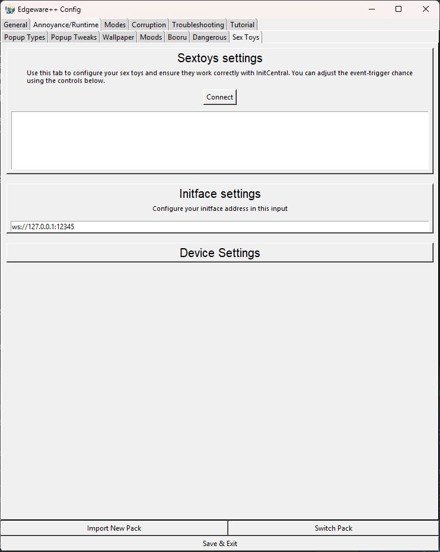
- Copy the Server Address from Intiface Central into the Intiface Settings field under the Sex Toys tab.
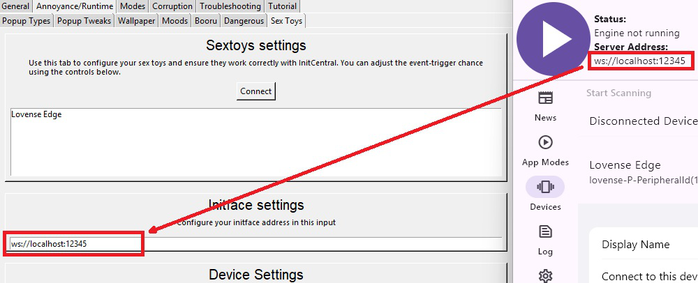
- In Intiface Central, switch App Mode to Engine (found under the App Modes tab) and start the server.
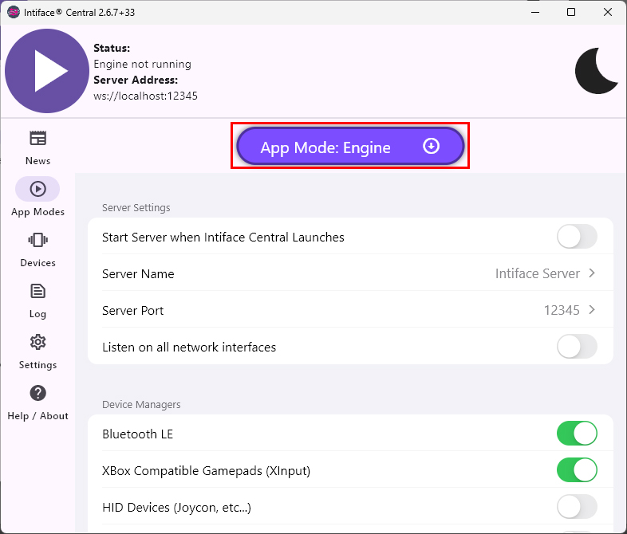
-
Start the server in Intiface Central.
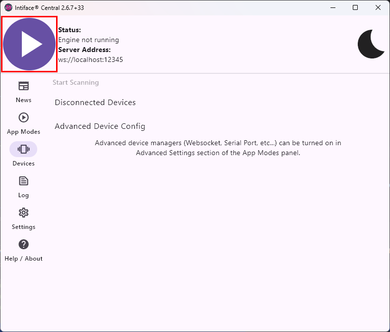
- Click Connect in Edgeware++ on the Sex Toys tab.
- Put each toy you wish to connect into pairing mode (ensure no other sextoy applications are running to avoid signal interference).
-
Click Start Scanning in Intiface Central under the Devices tab.
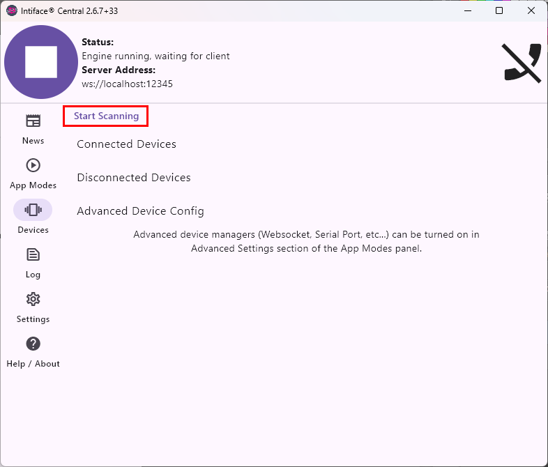
- Connected toys will appear in the Sex Toys Settings list.
- Click on any listed toy to reveal its available settings below.
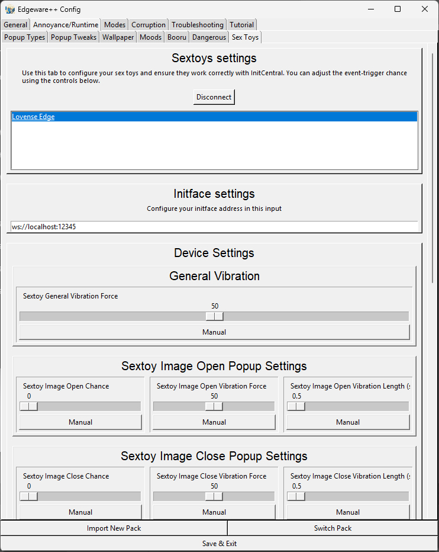
2. Configuring Intiface Central in Repeater Mode (Mobile & Desktop)
- On your mobile device, launch Intiface Central (Mobile), connect to the same Wi‑Fi network as your computer, and enable Bluetooth.
- On your computer, open Intiface Central (Desktop).
- In Intiface Central (Desktop), go to Settings and enable Show Repeater Mode (EXPERIMENTAL) if it isn’t already enabled. If it is missing - it's ok, you can skip this step
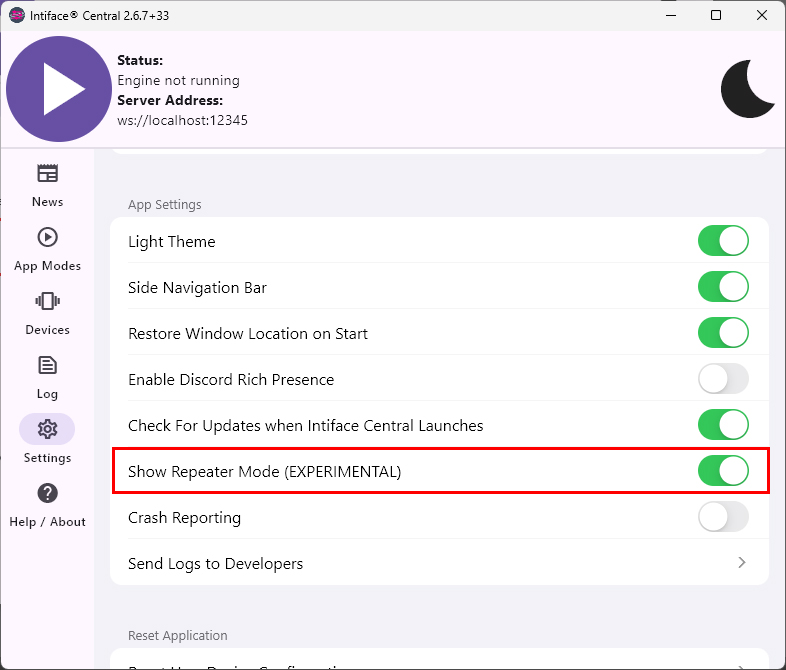
- Switch the App Mode to Repeater (under App Modes), then paste the address from Intiface Central (Mobile) into Remote Server Address in the Intiface Central (Desktop) in App Modes Tab.
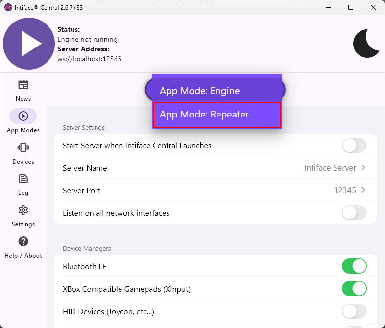
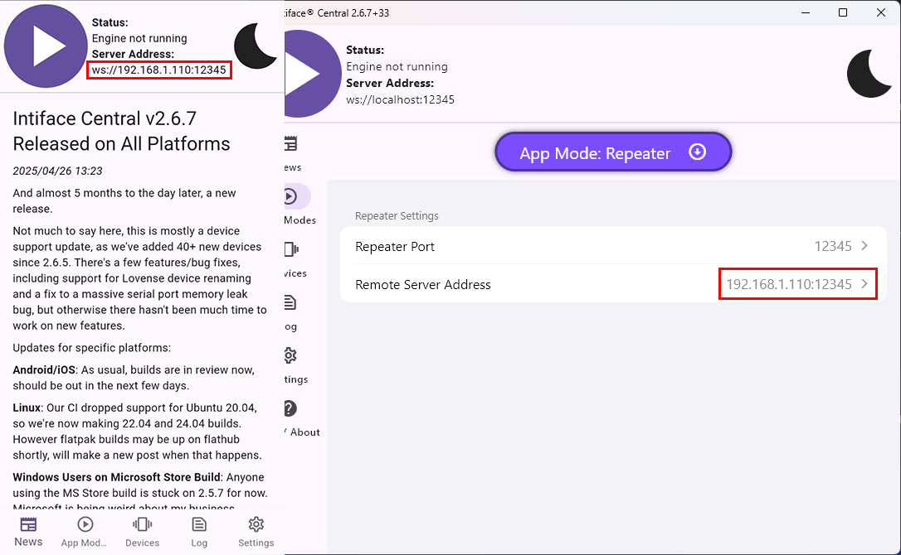
- Start the server on both Desktop and Mobile Intiface Central.
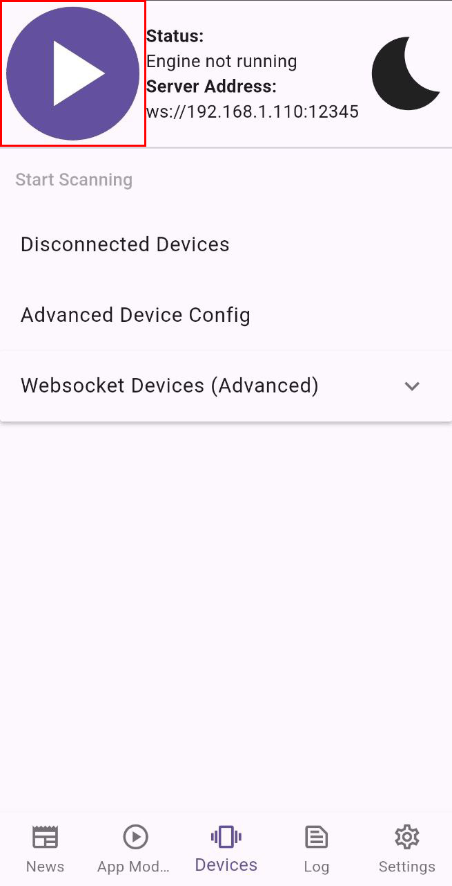
- In Edgeware++, enter
ws://127.0.0.1:12345 (or ws://localhost:12345) into the Intiface Settings field under Sex Toys Tab.
- Click Connect in Edgeware++ on the Sex Toys tab.
- Put your toys into pairing mode (ensure no other sextoy applications are running to avoid signal interference).
- Click Start Scanning in Intiface Central (Mobile) under the Devices tab.
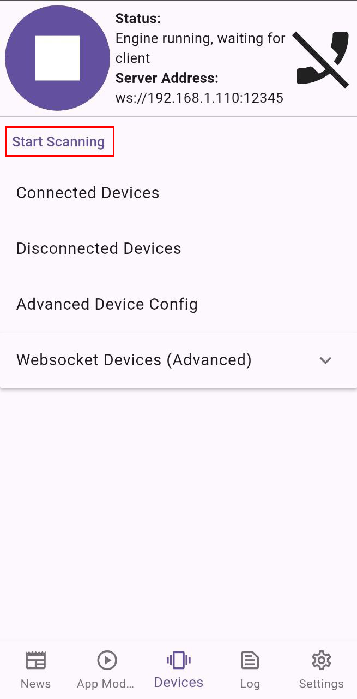
- Connected toys will appear in the Sex Toys Settings list.
- Click on any listed toy to reveal its available settings below.
3. Toy Settings Explained
- General Vibration – Maximum vibration strength as a percentage of the toy’s full power.
- Image Popup Open Settings – Chance, force, and length of vibration when an image popup appears (note: force is relative to the general vibration setting).
- Image Popup Close Settings – Vibration settings for image popups closing or disappearing.
- Video Popup Open Settings – Vibration settings for video popups opening.
- Video Popup Close Settings – Vibration settings for video popups closing or disappearing.
- Captions Settings – Vibration settings for subtitle/caption popups.
- Notifications Settings – Vibration settings for notification popups.
- Prompts Settings – Vibration settings for prompt dialogs.
- Prompt Lock – When Prompt Enabled is on, the toy will vibrate at the specified force until the prompt is correctly entered, ignoring other events.
4. P.S. Personal Advice
Enjoy this functionality. I’ve poured a lot of time and effort into it, and I’ll be genuinely thrilled if you get pleasure out of this feature.
Here are my recommendations: mess around with the strength and duration settings for each event type, and don’t set the Captions chance to 100%—it fires every time a popup window opens. It works best if your computer supports Bluetooth or you have a Bluetooth adapter, since Wi-Fi latency can sometimes spoil the experience ;) Stay happy, and most importantly—don’t forget to drink water.